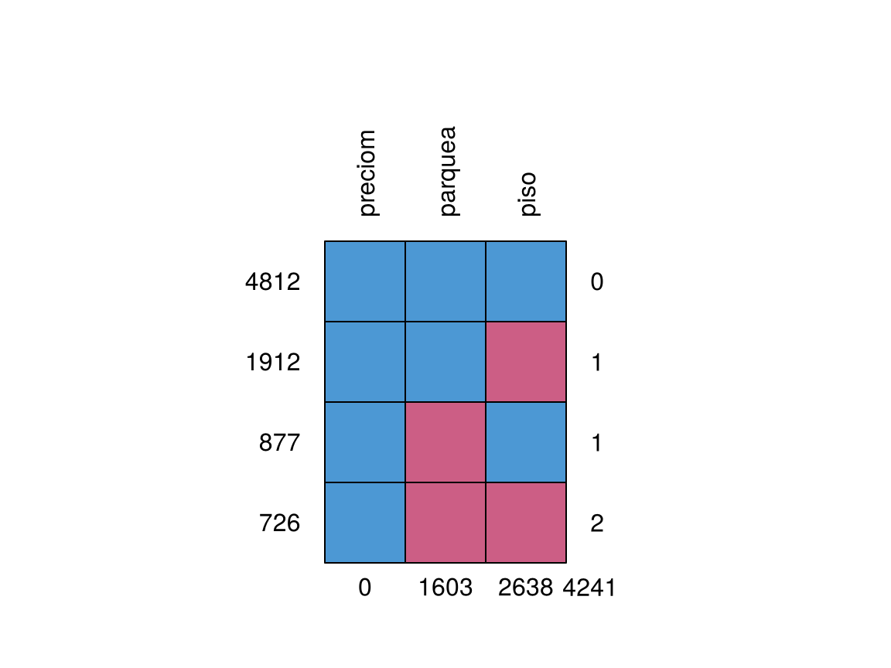
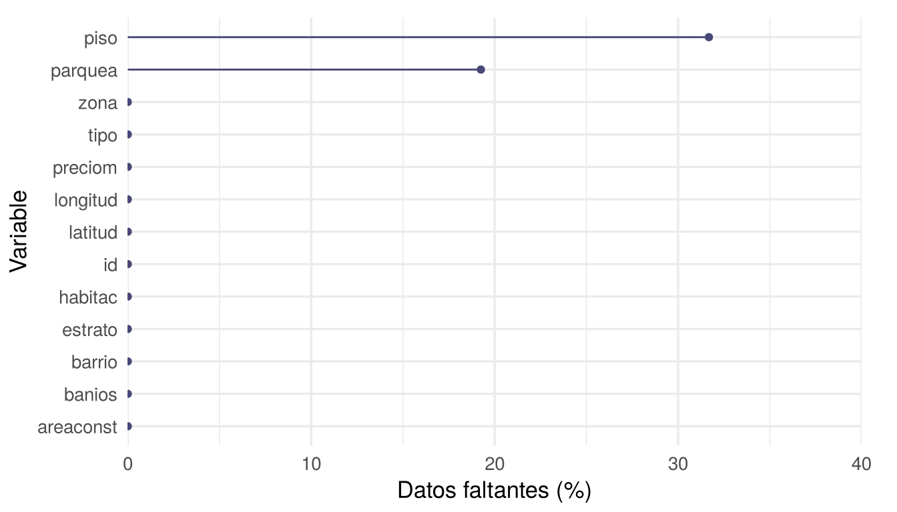
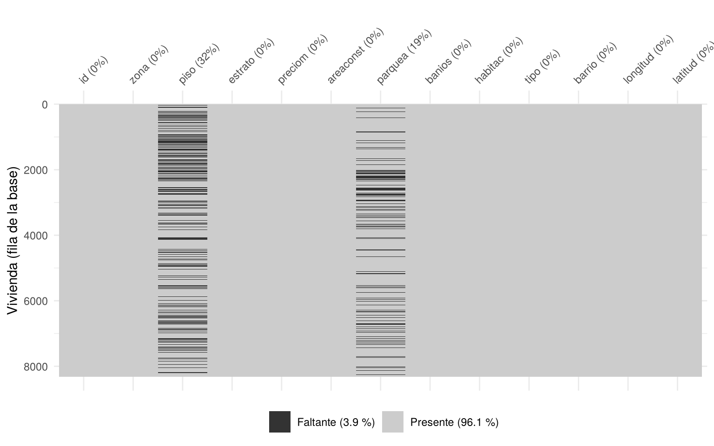
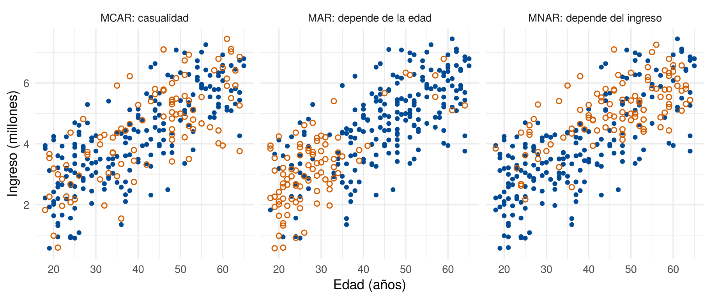
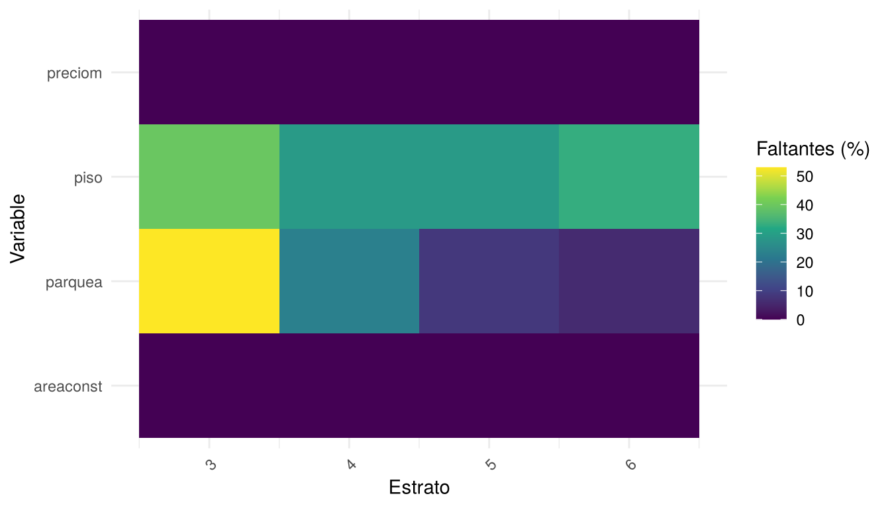
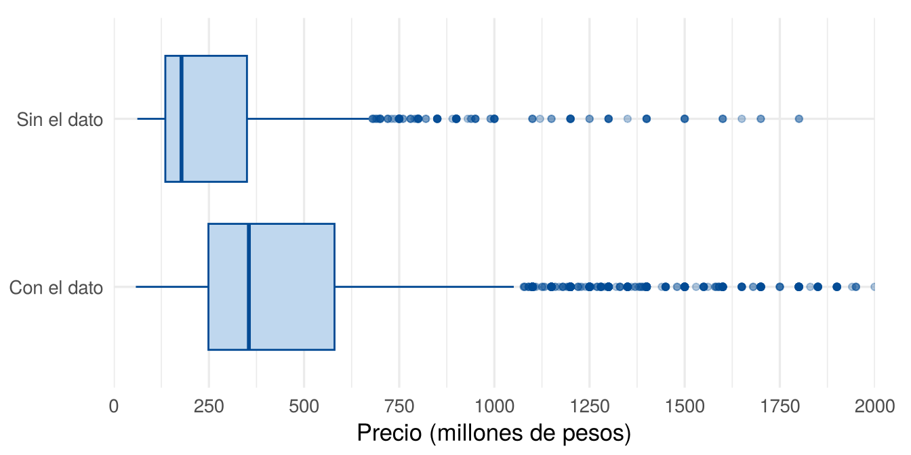
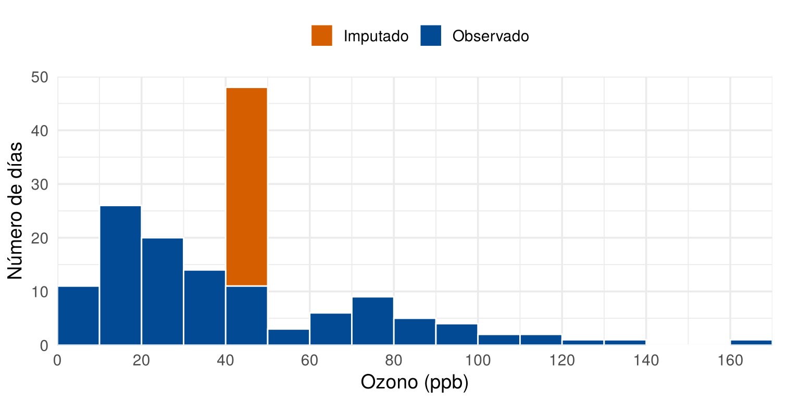
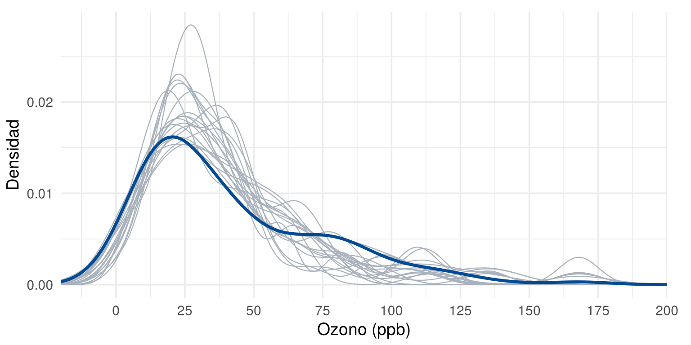

Un dato faltante es la ausencia de un valor donde se esperaba uno. Puede deberse a errores al recoger la información, a registros perdidos o a personas que no responden. Los datos faltantes pueden afectar la validez y la precisión de los resultados, y ningún método los recupera: solo permite trabajar con ellos bajo ciertos supuestos. Esta página presenta cómo detectarlos, por qué ocurren, cuándo se puede usar cada método y cómo se implementa en R.
Esta página usa vivienda_faltantes, del paquete
paqueteMETODOS, los datos airquality,
incluidos en R, y los paquetes ggplot2,
mice y naniar. Los bloques de código se
ejecutan en orden.
library(paqueteMETODOS)
data("vivienda_faltantes")library(ggplot2)
library(mice)
library(naniar)El paquete naniar sirve para explorar, resumir y
graficar datos faltantes. Sus gráficos se construyen con
ggplot2, así que se pueden modificar con las mismas
funciones, como labs() o theme_minimal(). Lo
desarrollan Nicholas Tierney, Dianne Cook y otros colaboradores, y se
presenta en Tierney y
Cook (2023). Se instala una sola vez con
install.packages("naniar").
R representa un dato faltante con NA.
Casi cualquier operación con NA da NA, por lo
que varias funciones tienen el argumento na.rm = TRUE.
x <- c(4, 7, NA, 10)
is.na(x)[1] FALSE FALSE TRUE FALSEmean(x)[1] NAmean(x, na.rm = TRUE)[1] 7No todos los faltantes se ven como NA (Wickham et al.,
2023):
| Caso | Ejemplo | Qué hacer |
|---|---|---|
| Código especial | -99 o 999 significan “sin
dato” |
Convertir con na_if() o con
na al importar |
| Texto vacío | Una celda con "" o "N/A" |
Convertir a NA |
| Faltante implícito | Falta la fila completa de un mes | Crear la fila con tidyr::complete() |
Antes de contar, los faltantes que no se ven como NA,
como un -99 o una celda vacía, se convierten en
NA, según la tabla anterior. Si no, el conteo sale
incompleto. También se quitan las filas vacías al final de la tabla,
como se explicó en ¿Cómo organizar los
datos?:
viviendas <- vivienda_faltantes[!is.na(vivienda_faltantes$id), ]La revisión responde tres preguntas: cuántos faltan, dónde están y cómo se ven.
is.na() marca cada celda vacía con TRUE, y
colSums() cuenta los TRUE de cada columna. Con
eso se arma una tabla por variable, ordenada de mayor a menor:
faltantes <- colSums(is.na(viviendas))
resumen <- data.frame(
variable = names(faltantes),
faltantes = faltantes,
porcentaje = round(100 * faltantes / nrow(viviendas), 1),
row.names = NULL
)
resumen <- resumen[order(resumen$faltantes, decreasing = TRUE), ]
resumen[resumen$faltantes > 0, ] variable faltantes porcentaje
3 piso 2638 31.7
7 parquea 1603 19.3Solo dos variables tienen faltantes: piso, con el 31.7
%, y parquea, con el 19.3 %. La función
miss_var_summary(), de naniar, da la misma
tabla en una línea:
head(miss_var_summary(viviendas), 3)# A tibble: 3 × 3
variable n_miss pct_miss
<chr> <int> <num>
1 piso 2638 31.7
2 parquea 1603 19.3
3 id 0 0 También conviene saber cuántas viviendas están completas, porque son las que quedarían si se eliminaran los registros con faltantes:
sum(complete.cases(viviendas))[1] 4812round(100 * mean(complete.cases(viviendas)), 1)[1] 57.8Solo el 57.8 % de las viviendas tiene todos los datos.
which() devuelve las posiciones de las filas con
faltantes. Sirve para revisar esos registros uno por uno:
filas_sin_piso <- which(is.na(viviendas$piso))
length(filas_sin_piso)[1] 2638head(viviendas[filas_sin_piso, c("id", "tipo", "estrato", "piso", "parquea")])# A tibble: 6 × 5
id tipo estrato piso parquea
<dbl> <chr> <dbl> <dbl> <dbl>
1 8307 Casa 5 NA 4
2 8297 Casa 5 NA 2
3 8298 Casa 5 NA 8
4 8300 Apartamento 5 NA 4
5 8286 Apartamento 5 NA 1
6 8281 Casa 3 NA NALa función md.pattern(), de mice, muestra
qué variables faltan juntas. Con rotate.names = TRUE los
nombres de las variables se leen mejor:
patrones <- md.pattern(viviendas[, c("preciom", "piso", "parquea")], rotate.names = TRUE)
Patrones de datos faltantes en piso y parquea
patrones preciom parquea piso
4812 1 1 1 0
1912 1 1 0 1
877 1 0 1 1
726 1 0 0 2
0 1603 2638 4241Cada fila es un patrón: el número de la izquierda indica cuántas viviendas lo tienen, el 1 indica que el dato está y el 0 que falta. El número de la derecha dice cuántas variables faltan en ese patrón, y la última fila suma los faltantes de cada variable. Por ejemplo, a 726 viviendas les faltan las dos variables.
Dos gráficos de naniar resumen lo anterior.
gg_miss_var() muestra el porcentaje de faltantes de cada
variable:
gg_miss_var(viviendas, show_pct = TRUE) +
scale_y_continuous(limits = c(0, 40), breaks = seq(0, 40, 10), expand = c(0, 0)) +
labs(x = "Variable", y = "Datos faltantes (%)") +
theme_minimal(base_size = 13) +
theme(plot.margin = margin(10, 20, 5, 5))
Porcentaje de datos faltantes por variable en las viviendas
vis_miss() dibuja la base completa: cada columna es una
variable, cada fila una vivienda, y las celdas oscuras son los
faltantes. Cada variable lleva su porcentaje de faltantes en el nombre.
La leyenda viene en inglés, así que se traduce con
scale_fill_manual() y se le agrega el porcentaje de celdas
presentes y faltantes:
pct_faltante <- round(100 * mean(is.na(viviendas)), 1)
vis_miss(viviendas) +
scale_fill_manual(values = c("grey80", "grey20"),
labels = c(paste0("Presente (", 100 - pct_faltante, " %)"),
paste0("Faltante (", pct_faltante, " %)")),
name = NULL) +
labs(y = "Vivienda (fila de la base)")
Mapa de datos faltantes en las viviendas
En el mapa se ve algo que la tabla no muestra: los faltantes no están
repartidos igual a lo largo de la base. Por ejemplo, piso
falta en el 48.3 % de la primera cuarta parte de las filas y en cerca
del 25 % de la última. Si la base tiene un orden, como la fecha de
registro o quien recogió los datos, vale la pena preguntar por qué. Esa
pregunta se estudia en ¿Por qué
faltan los datos?.
No. Antes de imputar hay que preguntarse si el dato existe. En
vivienda_faltantes, parquea podría estar vacío
porque no se registró o porque la vivienda no tiene parqueadero:
table(viviendas$parquea, useNA = "ifany")
1 2 3 4 5 6 7 8 9 10 <NA>
3156 2478 521 386 68 68 18 17 4 8 1603 No aparece ningún cero, lo que sugiere que una vivienda sin
parqueadero podría haberse registrado como vacío. También
piso podría no aplicar a una casa de un solo nivel. Si el
faltante significa “no tiene” o “no aplica”, no se imputa: se
recodifica, después de confirmarlo con quien recogió los datos.
Imagine una encuesta a 300 personas que pregunta la edad y el ingreso. Todas dicen su edad, pero algunas no dicen su ingreso. La pregunta clave es: ¿por qué falta ese dato? Rubin (1976) propuso tres posibles respuestas (van Buuren, 2018):
El nombre MAR confunde, porque no significa que falte por casualidad. Significa que la falta se puede explicar con las variables que sí se observaron.
La siguiente figura muestra los tres casos con datos simulados. Cada punto es una persona. Los puntos azules son quienes dijeron su ingreso, y los círculos naranja son quienes no lo dijeron. En una base real, esos círculos no se ven: aquí se muestran porque los datos son simulados.

Los tres mecanismos de datos faltantes (datos simulados)
set.seed(2026)
n <- 300
edad <- round(runif(n, 18, 65))
ingreso <- 1 + 0.08 * edad + rnorm(n, 0, 1)
# Probabilidad de que falte el ingreso en cada caso
falta_mcar <- runif(n) < 0.35
falta_mar <- runif(n) < ifelse(edad < 35, 0.70, 0.10)
falta_mnar <- runif(n) < ifelse(ingreso > median(ingreso), 0.60, 0.10)
personas <- data.frame(
edad = rep(edad, 3),
ingreso = rep(ingreso, 3),
falta = c(falta_mcar, falta_mar, falta_mnar),
caso = factor(rep(c("MCAR: casualidad", "MAR: depende de la edad", "MNAR: depende del ingreso"),
each = n),
levels = c("MCAR: casualidad", "MAR: depende de la edad",
"MNAR: depende del ingreso"))
)
ggplot(personas, aes(x = edad, y = ingreso)) +
geom_point(data = subset(personas, !falta), color = "#034A94", size = 1.5) +
geom_point(data = subset(personas, falta), color = "#D55E00", shape = 1, size = 1.8,
stroke = 0.8) +
facet_wrap(~ caso) +
labs(x = "Edad (años)", y = "Ingreso (millones)") +
theme_minimal(base_size = 13)Para ver por qué importa, se compara el promedio de ingreso de todas las personas con el promedio de quienes respondieron:
round(c(todas = mean(ingreso),
MCAR = mean(ingreso[!falta_mcar]),
MAR = mean(ingreso[!falta_mar]),
MNAR = mean(ingreso[!falta_mnar])), 2)todas MCAR MAR MNAR
4.27 4.16 4.71 3.86 El promedio de todas las personas es 4.27 millones. Con MCAR queda cerca, en 4.16. Con MAR sube a 4.71, porque faltan sobre todo los jóvenes, que ganan menos. Con MNAR baja a 3.86, porque faltan los ingresos altos. La diferencia es que en MAR la edad permite corregir el problema, mientras que en MNAR no hay una variable observada que lo resuelva.
| Tipo | En palabras sencillas | ¿Por qué falta el ingreso? | ¿Qué se puede hacer? |
|---|---|---|---|
| MCAR | Fue pura casualidad | Se dañó un archivo | Eliminar registros no produce sesgo, aunque se pierden datos |
| MAR | Se explica con lo que sí tengo | Los jóvenes responden menos | Usar las otras variables para imputar, como la edad |
| MNAR | Depende de lo que no veo | Los ingresos altos no se reportan | Ningún método lo resuelve solo: se comparan varios supuestos |
Con datos reales no se ven los valores que faltan, así que el
mecanismo no se puede comprobar. Sí se puede reunir evidencia, en cuatro
pasos. El ejemplo usa parquea.
Paso 1. Pensar en cómo se recogieron los datos. Antes de calcular, hay que preguntarse por qué podría faltar el dato. En las viviendas, una sin parqueadero pudo quedar con la celda vacía en lugar de un cero. Si fuera así, el faltante dependería del propio número de parqueaderos, y sería MNAR. Esta pregunta se responde con quien recogió los datos, no con R.
Paso 2. Comparar a quienes tienen el dato con quienes
no. Si los datos fueran MCAR, las viviendas con y sin
parquea se parecerían en todo lo demás. Se crea un
indicador de falta y se compara con otras variables. En una variable
categórica se calcula el porcentaje de faltantes en cada grupo:
falta <- is.na(viviendas$parquea)
round(100 * tapply(falta, viviendas$estrato, mean), 1) 3 4 5 6
52.9 22.9 8.3 5.9 gg_miss_fct(), de naniar, muestra lo mismo
para todas las variables a la vez:
gg_miss_fct(viviendas[, c("estrato", "piso", "parquea", "preciom", "areaconst")], fct = estrato) +
scale_fill_viridis_c(name = "Faltantes (%)") +
labs(x = "Estrato", y = "Variable")
Porcentaje de datos faltantes de cada variable según el estrato
En una variable numérica se comparan sus valores en los dos grupos, con indicadores o con un gráfico de cajas:
tapply(viviendas$preciom, falta, median)FALSE TRUE
355 178 comparacion <- data.frame(
precio = viviendas$preciom,
grupo = ifelse(falta, "Sin el dato", "Con el dato")
)
ggplot(comparacion, aes(x = precio, y = grupo)) +
geom_boxplot(fill = "#BFD7EE", color = "#034A94", outlier.alpha = 0.3) +
scale_x_continuous(limits = c(0, 2000), breaks = seq(0, 2000, 250), expand = c(0, 0)) +
labs(x = "Precio (millones de pesos)", y = NULL) +
theme_minimal(base_size = 13) +
theme(plot.margin = margin(10, 20, 5, 5))
Precio de las viviendas con y sin el dato de parqueaderos
El parquea falta en el 52.9 % de las viviendas de
estrato 3 y en el 5.9 % de las de estrato 6. Además, las viviendas sin
el dato tienen un precio mediano de 178 millones, frente a 355 de las
demás. Los dos grupos son distintos, así que hay evidencia contra MCAR.
Eliminar esas viviendas dejaría una base con menos viviendas de bajo
precio.
Paso 3. Usar la prueba de Little como complemento.
La prueba de Little (1988) tiene como hipótesis nula que los datos son
MCAR. Compara las medias de las variables entre los distintos patrones
de faltantes. La función mcar_test(), de
naniar, la aplica a las variables numéricas:
numericas <- viviendas[, c("piso", "estrato", "preciom", "areaconst", "parquea", "banios", "habitac")]
mcar_test(numericas)# A tibble: 1 × 4
statistic df p.value missing.patterns
<dbl> <dbl> <dbl> <int>
1 1466. 17 0 4El valor p es casi cero, así que se rechaza que los datos sean MCAR. Para leer bien la prueba:
mcar_test() la convierte en códigos numéricos sin
avisar, y la trata como si fuera una cantidad.Paso 4. Declarar el supuesto y sus consecuencias. Con la evidencia anterior se elige un supuesto, se dice por qué y se indica qué implica para el análisis. Por ejemplo:
La falta de
parquease relaciona con el estrato y el precio, y la prueba de Little rechaza MCAR. Se asume MAR, porque esas variables están en la base, y por eso se incluyen en el modelo de imputación. No se puede descartar MNAR: si las viviendas sin parqueadero quedaron vacías, el faltante significa cero. Se confirmará con quien recogió los datos.
El mecanismo no se puede demostrar con los datos. MAR frente a MNAR no se puede probar, porque la información necesaria es justamente la que falta (van Buuren, 2018). MAR es un supuesto que justifica el análisis, no una propiedad de los datos (Sterne et al., 2009). Por eso, no rechazar la prueba de Little (1988) no demuestra que los datos sean MCAR.
La siguiente tabla resume cuándo sirve cada método, a partir de la Tabla 1.1 de van Buuren (2018), y se detalla en las secciones siguientes.
| Método | Cuándo se puede usar | Principal riesgo | En R |
|---|---|---|---|
| Eliminar registros | MCAR, o se pierde una parte pequeña de los datos | Sesgo si no es MCAR; se pierde información | na.omit(),
complete.cases() |
| Media o mediana | Arreglo rápido, con muy pocos faltantes | Reduce la varianza y distorsiona relaciones | replace() |
| Regresión | Pocas veces; solo si la predicción es casi perfecta | Refuerza las relaciones de forma artificial | lm(), predict() |
| Regresión estocástica | MAR, y se necesita una sola base completa | Puede dar valores imposibles | mice(method = "norm.nob") |
| Imputación múltiple | MAR plausible y variables que ayudan a predecir el faltante | Requiere un buen modelo de imputación | mice(), pool() |
¿Hay un porcentaje de faltantes a partir del cual se debe imputar? No hay una regla fija. Madley-Dowd et al. (2019) muestran que el porcentaje de faltantes no debe guiar la decisión: una imputación múltiple válida reduce el sesgo incluso con porcentajes altos. Importan más el mecanismo y las variables disponibles.
Los ejemplos usan airquality, con mediciones diarias de
calidad del aire en Nueva York, porque es el ejemplo de van
Buuren (2018). Ozone tiene 37 faltantes de 153
datos.
aire <- airquality[, c("Ozone", "Solar.R", "Wind", "Temp")]
colSums(is.na(aire)) Ozone Solar.R Wind Temp
37 7 0 0 ¿Qué hace? Quita cada registro con algún faltante en las variables del análisis. También se llama análisis de casos completos.
¿Cuándo se puede usar? Si los datos son MCAR, produce estimaciones insesgadas. También puede ser adecuado si se pierde solo una parte pequeña de los datos.
¿Cómo se implementa?
completos <- na.omit(aire)
nrow(completos)[1] 111¿Qué cuidados tener? Se perdieron 42 de 153 días. Si los datos no son MCAR, las estimaciones pueden quedar sesgadas (van Buuren, 2018).
¿Qué hace? Reemplaza cada faltante por la media, o por la mediana si la variable es asimétrica. En una variable categórica se usa la moda.
¿Cuándo se puede usar? Solo como arreglo rápido, cuando faltan muy pocos valores. En general se debe evitar (van Buuren, 2018).
¿Cómo se implementa?
ozono_media <- replace(aire$Ozone, is.na(aire$Ozone), mean(aire$Ozone, na.rm = TRUE))
round(c(antes = sd(aire$Ozone, na.rm = TRUE), despues = sd(ozono_media)), 1) antes despues
33.0 28.7 ¿Qué cuidados tener? La desviación estándar bajó de 33 a 28.7, porque todos los datos nuevos están en el centro. La siguiente figura muestra el pico artificial que se crea:
ozono <- data.frame(valor = ozono_media,
origen = ifelse(is.na(aire$Ozone), "Imputado", "Observado"))
ggplot(ozono, aes(x = valor, fill = origen)) +
geom_histogram(breaks = seq(0, 170, 10), color = "white") +
scale_fill_manual(values = c("Imputado" = "#D55E00", "Observado" = "#034A94")) +
scale_x_continuous(limits = c(0, 170), breaks = seq(0, 170, 20), expand = c(0, 0)) +
scale_y_continuous(limits = c(0, 50), breaks = seq(0, 50, 10), expand = c(0, 0)) +
labs(x = "Ozono (ppb)", y = "Número de días", fill = NULL) +
theme_minimal(base_size = 14) +
theme(legend.position = "top", plot.margin = margin(10, 20, 5, 5))
Ozono observado y ozono con imputación por la media
¿Qué hace? Ajusta un modelo con los datos observados
y usa la predicción como valor imputado. Aquí se predice
Ozone con Wind y Temp, que no
tienen faltantes.
¿Cuándo se puede usar? Pocas veces. Es realista solo si la predicción es casi perfecta. Van Buuren (2018) lo considera uno de los métodos más peligrosos, porque refuerza las relaciones de forma artificial.
¿Cómo se implementa?
modelo <- lm(Ozone ~ Wind + Temp, data = aire)
ozono_reg <- aire$Ozone
ozono_reg[is.na(ozono_reg)] <- predict(modelo, newdata = aire[is.na(aire$Ozone), ])¿Qué cuidados tener? Los valores imputados quedan exactamente sobre el plano del modelo, por lo que la variabilidad se subestima. Si se usa una sola variable para predecir, los puntos imputados forman una línea perfecta.
¿Qué hace? Agrega a la predicción un valor aleatorio, para recuperar la dispersión de los datos.
¿Cuándo se puede usar? Bajo MAR, si el modelo es adecuado y se necesita una sola base completa.
¿Cómo se implementa? Con mice() y el
método norm.nob, usando Wind y
Temp:
base <- aire[, c("Ozone", "Wind", "Temp")]
estocastica <- mice(base, method = "norm.nob", m = 1, maxit = 1, seed = 123, printFlag = FALSE)
ozono_est <- complete(estocastica)$Ozone
min(ozono_est)[1] -31.64427¿Qué cuidados tener? Puede producir valores imposibles. Aquí el ozono mínimo salió negativo. Además, los errores estándar quedan demasiado pequeños, porque la base se analiza como si esos valores se hubieran observado (van Buuren, 2018).
¿Qué hace? En lugar de un valor, crea varios valores posibles para cada faltante. Tiene tres pasos (van Buuren, 2018):
La diferencia entre las bases refleja la incertidumbre sobre el dato que falta. Si \(\hat{Q}_l\) es la estimación en la base \(l\) y \(\bar{U}\) es el promedio de sus varianzas, las reglas de Rubin (1987) son:
\[ \bar{Q} = \frac{1}{m}\sum_{l=1}^{m}\hat{Q}_l \qquad B = \frac{1}{m-1}\sum_{l=1}^{m}(\hat{Q}_l - \bar{Q})^2 \qquad T = \bar{U} + \left(1 + \frac{1}{m}\right)B \]
donde \(B\) mide la variación entre imputaciones y \(T\) es la varianza total.
¿Cuándo se puede usar? Cuando MAR es plausible y se tienen variables que ayudan a predecir el faltante o se relacionan con la causa de la falta (Sterne et al., 2009). No resuelve el problema si los datos son MNAR.
¿Cómo se implementa? mice() imputa cada
variable con ayuda de las demás. El método por defecto para variables
numéricas es la comparación predictiva de medias
(predictive mean matching, PMM): busca casos parecidos y toma
el valor observado de uno de ellos, por lo que no aparecen valores
imposibles (van
Buuren, 2018).
imputacion <- mice(aire, method = "pmm", m = 20, seed = 123, printFlag = FALSE)Se usan 20 bases. Sterne et al. (2009) sugieren al menos 20, y una regla usual es usar tantas como el porcentaje de casos incompletos (van Buuren, 2018).
Después se analiza cada base y se combinan los resultados. Por
ejemplo, para la media de Ozone:
ajuste <- with(imputacion, lm(Ozone ~ 1))
resultado <- summary(pool(ajuste))
round(resultado[, c("estimate", "std.error")], 2) estimate std.error
1 41.38 2.7Hay que revisar si los valores imputados son razonables. En esta figura, cada línea gris es una base imputada y la azul son los datos observados:
largas <- complete(imputacion, action = "long")
largas$imputado <- rep(is.na(aire$Ozone), times = 20)
ggplot() +
geom_density(data = subset(largas, imputado), aes(x = Ozone, group = .imp),
color = "#A9B2BC", linewidth = 0.4) +
geom_density(data = aire, aes(x = Ozone), color = "#034A94", linewidth = 1.2) +
scale_x_continuous(limits = c(-20, 200), breaks = seq(0, 200, 25), expand = c(0, 0)) +
labs(x = "Ozono (ppb)", y = "Densidad") +
theme_minimal(base_size = 14) +
theme(plot.margin = margin(10, 20, 5, 5))
Densidad del ozono observado y de los valores imputados
¿Qué cuidados tener?
La siguiente tabla compara la media y la desviación estándar de
Ozone, y su correlación con Temp. Para la
imputación múltiple se promedian los valores de las 20 bases.
resumir <- function(x) {
c(media = mean(x), de = sd(x), cor_temp = cor(x, aire$Temp))
}
multiple <- sapply(1:20, function(i) resumir(complete(imputacion, i)$Ozone))
comparacion <- rbind(
"Datos observados" = c(mean(aire$Ozone, na.rm = TRUE), sd(aire$Ozone, na.rm = TRUE),
cor(aire$Ozone, aire$Temp, use = "complete.obs")),
"Media" = resumir(ozono_media),
"Regresión" = resumir(ozono_reg),
"Regresión estocástica" = resumir(ozono_est),
"Imputación múltiple" = rowMeans(multiple)
)
colnames(comparacion) <- c("Media", "Desv. estándar", "Correlación con Temp")
round(comparacion, 2) Media Desv. estándar Correlación con Temp
Datos observados 42.13 32.99 0.70
Media 42.13 28.69 0.61
Regresión 41.86 30.76 0.73
Regresión estocástica 40.95 32.69 0.69
Imputación múltiple 41.38 32.09 0.68Imputar con la media reduce la desviación estándar y debilita la correlación con la temperatura. La regresión hace lo contrario con la correlación: la aumenta. La imputación múltiple conserva mejor las dos medidas, pero no garantiza el valor real, que no se conoce.
Sterne et al. (2009) recomiendan incluir en un informe:
| Problema | Causa | Solución |
|---|---|---|
mean() da NA |
La variable tiene faltantes | Decidir qué hacer con ellos, o usar
na.rm = TRUE |
| Se imputa un dato que no existe | El faltante significa “no aplica” o “no tiene” | Confirmar con la fuente y recodificar |
| Se concluye que los datos son MCAR | La prueba no rechazó | No rechazar no demuestra MCAR |
| Se concluye que los datos son MAR | La prueba de Little rechazó MCAR | Rechazar MCAR no distingue entre MAR y MNAR |
mcar_test() incluye una variable de texto
como si fuera número |
La función convierte el texto en códigos sin avisar | Pasarle solo las variables numéricas |
| El conteo de faltantes sale en cero, pero hay celdas vacías | Los faltantes están como -99 o
"" |
Convertirlos en NA antes de contar |
could not find function "gg_miss_var" |
No se cargó el paquete | Ejecutar library(naniar) |
| La varianza baja después de imputar | Se usó una imputación con la media | Usar imputación múltiple |
| Se usa solo una regla del porcentaje de faltantes | Se ignora el mecanismo | Revisar por qué faltan los datos |
Se analiza una sola base de mice() |
Se pierde la incertidumbre | Analizar las \(m\)
bases y usar pool() |
| El resultado cambia en cada ejecución | mice() usa números aleatorios |
Fijar seed |
could not find function "mice" |
No se cargó el paquete | Ejecutar library(mice) |
Clasifique cada caso como MCAR, MAR o MNAR, e indique qué supuesto se hace:
El primero sería MCAR, el segundo MAR y el tercero MNAR. En los tres casos es un supuesto basado en lo que se sabe del estudio, porque los datos por sí solos no lo demuestran.
Calcule el porcentaje de faltantes de piso por tipo de
vivienda. ¿Parecen MCAR?
tipo <- tolower(viviendas$tipo)
tipo[tipo == "apto"] <- "apartamento"
round(100 * tapply(is.na(viviendas$piso), tipo, mean), 1)apartamento casa
27.1 39.0 Falta en el 27.1 % de los apartamentos y en el 39 % de las casas. La falta se relaciona con el tipo, así que no parece MCAR. Además, en las casas el piso podría no aplicar.
Impute Solar.R con su media y compare la desviación
estándar antes y después.
solar <- replace(aire$Solar.R, is.na(aire$Solar.R), mean(aire$Solar.R, na.rm = TRUE))
round(c(antes = sd(aire$Solar.R, na.rm = TRUE), despues = sd(solar)), 1) antes despues
90.1 88.0 Baja poco, porque solo faltan 7 datos. El efecto depende de cuántos valores se reemplazan.
Con aire, use mice() con 20 bases para
estimar la media de Solar.R. Compárela con la media de los
datos disponibles.
ajuste_solar <- with(imputacion, lm(Solar.R ~ 1))
round(summary(pool(ajuste_solar))[, c("estimate", "std.error")], 2) estimate std.error
1 184.72 7.51round(mean(aire$Solar.R, na.rm = TRUE), 2)[1] 185.93La base imputacion ya contiene Solar.R. Las
dos medias son parecidas, porque faltan pocos datos.
Siga los pasos 2 y 3 de ¿Cómo
se explora el mecanismo? para la variable piso: compare
el porcentaje de faltantes por zona, la mediana del precio con y sin el
dato, y aplique la prueba de Little. ¿Qué supuesto adoptaría y por
qué?
falta_piso <- is.na(viviendas$piso)
round(100 * tapply(falta_piso, viviendas$zona, mean), 1) Zona Centro Zona Norte Zona Oeste Zona Oriente Zona Sur
44.4 40.7 32.8 40.7 26.7 tapply(viviendas$preciom, falta_piso, median)FALSE TRUE
320 350 mcar_test(numericas)# A tibble: 1 × 4
statistic df p.value missing.patterns
<dbl> <dbl> <dbl> <int>
1 1466. 17 0 4El porcentaje de faltantes cambia según la zona: va del 26.7 % en la
Zona Sur al 44.4 % en la Zona Centro. El precio mediano es parecido en
los dos grupos, pero la prueba de Little rechaza MCAR, así que hay
evidencia contra MCAR. Se puede asumir MAR si se incluyen en la
imputación la zona y el tipo, que también se relaciona con la falta,
como se vio en el reto 2. Sin embargo, piso puede no
aplicar en una casa de un solo nivel. Si es así, el faltante no se
imputa: se recodifica, como se explicó en ¿Todo faltante se debe
llenar?.
mice.mice en CRAN.naniar; el artículo es de
acceso abierto.naniar en CRAN.Última revisión: 6 de noviembre de 2026.